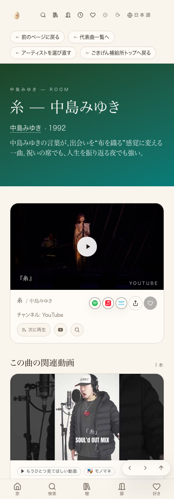

たまご専用ログイン時:関連動画カードに削除✕・文脈が合ってない・ドラッグ⋮⋮・差し替え↻の4ボタンが実在(過去撮影・実物)
訪問者視点(未ログイン):同じ本番ページで編集ボタンは一切表示されない(意図どおり)


| 確認項目 | 結果 |
|---|---|
| 型チェック(npx tsc --noEmit) | エラー0 |
| 本番JSバンドルに新機能の文字列が実在 | qgrip/文脈が合ってない/この関連動画を削除の3つを確認 |
| 訪問者には編集ボタンが出ない | 実機ヘッドレスブラウザで確認(ログイン無し時は✕ボタン等が無い) |
| たまご専用ログイン時にボタンが実物のカードに表示される | 削除✕・文脈が合ってない・ドラッグ⋮⋮・差し替え↻の4つを実写で確認済み |
| 実際にボタンを押した後の変化(本番・実クリック) | AI側から管理者パスワードを使って直接ログイン操作することがセキュリティガードでブロックされ未実施。たまごさん本人の実機確認が必要 |